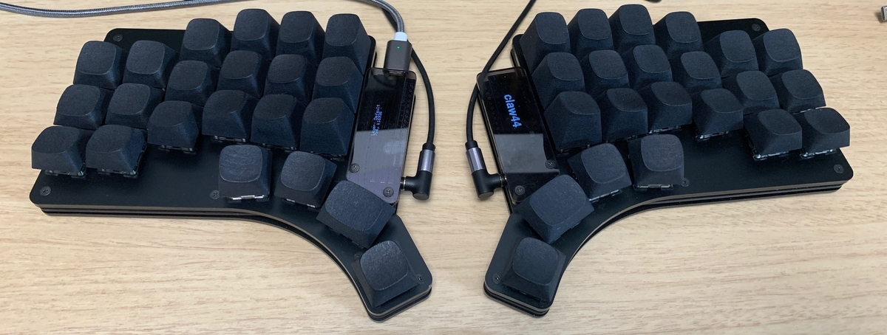

キーボード本体
キーキャップ
キーキャップはぜろけーさん作の"3D” キーキャップセットです。
Claw44は元々、スムーズな打鍵や指に負荷の少なくなるように設計していますが、こちらのキーキャップを使うことにより、人差し指や小指の外側上段など届きにくいキーも押しやすくなります。
こちらはdmm.makeさんの3Dプリントサービスを利用して、購入することができます。
素材はMJFのPA12かPA12GBで、ブラック磨きがオススメです。
キースイッチ
3Dキーキャップはキーキャップだけで3D形状を実現していることもあって、キーキャップ自体に高さがある部分があります。 軸の弱いキースイッチだと、多少ぐらつきが気になることがありますが、こちらのInkスイッチは軸がとてもしっかりしているので、ぐらつきが気にならず3Dキーキャップにとても合っています。
Lube
また、合わせてGPL 205g0という潤滑油でlubeしてあげると、静音でスムーズな打鍵感が得られます。
lubeのやり方は、 キースイッチ ベストプラクティス（2019年6月版） – recompile keys が、とても参考になります。
潤滑油は遊舎工房さんで購入できます。